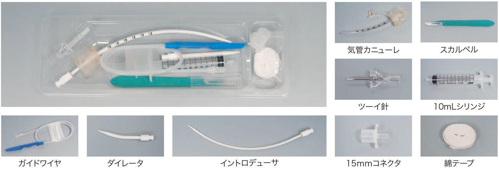
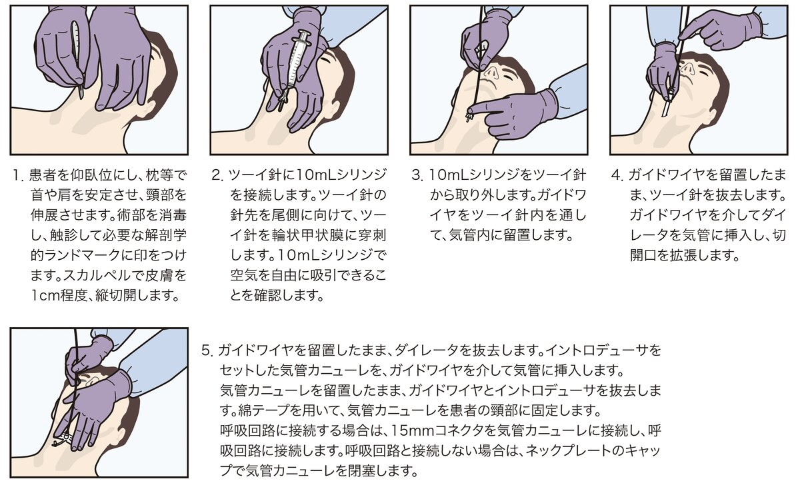
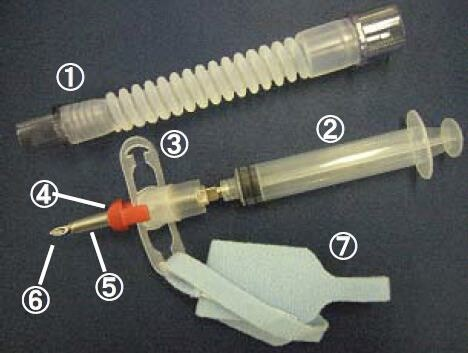
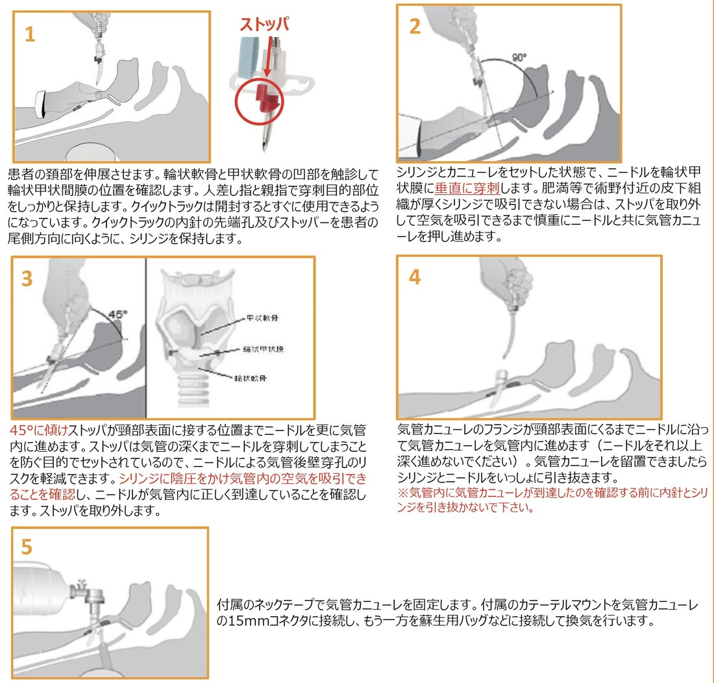

当ICUには、緊急気道確保（輪状甲状膜穿刺・切開）デバイスとしてファストラ（セルジンガー法）とクイックトラック（直接穿刺法）の2機種を配置している。本ページは両機種の使い分け・名称統一・使用方法をまとめたもの。
| デバイス | 方式・特徴 | 用途 | 配置場所 |
|---|---|---|---|
| ファストラ | セルジンガー法（ガイドワイヤを用いる切開キット）。気管内に確実に留置でき安全性が高い一方、挿入に少し時間がかかる。 | 喀痰の排出が悪い患者（ICUで使うのはほとんどこれ） | ICU入り口の棚 |
| クイックトラック | 直接穿刺法（穿刺針とカニューレが一体型の迅速キット）。ガイドワイヤを使わず迅速だが迷入（誤挿入）のリスクがある。 | 気道緊急時の緊急酸素投与 | ICU入り口のDAMバッグ |
気道緊急で迅速に確保したい場面ではクイックトラック、時間に余裕がありゆっくり確実に入れたい場面ではファストラが適している。
ガイドワイヤを用いるセルジンガー法の輪状甲状膜切開キット。緊急気道確保（15mmコネクタを接続して換気補助）と、気管分泌物吸引（分泌物を吸引して気道クリアランスを維持）に用いる。15mmコネクタは装着・取り外しが可能で、気管カニューレの内径は4mm。当院ではICU入り口の棚に配置。
構成品
| 販売名 | ファストラ（規格 FAS-BASE） |
| 認証番号 | 307ADBZX00033000 |
| 製造販売業者 | 泉工医科工業株式会社 |

ガイドワイヤを使わず直接穿刺する緊急気道確保キット。穿刺針（ニードル）と気管カニューレが一体型で迅速に気道を確保できる。ストッパが深い穿刺を防ぎ、ニードルによる気管後壁穿孔のリスクを軽減する。品番：30-04-004-1（成人用）／30-04-002-1（小児用）。当院ではICU入り口のDAMバッグに配置。
各パーツの名称①カテーテルマウント ②シリンジ ③フランジ ④ストッパ ⑤気管カニューレ ⑥ニードル ⑦ネックテープ


※ 院内アカウントでのアクセスが必要です。
出典：ファストラ 製品情報（泉工医科工業株式会社）／ クイックトラック 製品情報（スミスメディカル・ジャパン株式会社）／ ICU Teams 院内通知「緊急気道確保デバイスの名称統一について」。本ページは院内資料・製品情報をまとめた教育用のもので、実際の手技は電子添付文書および指導医の指示に従ってください。
制作：ICU 関谷